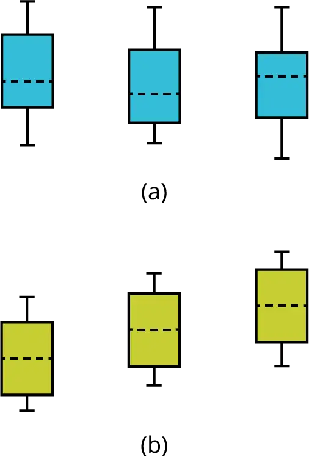
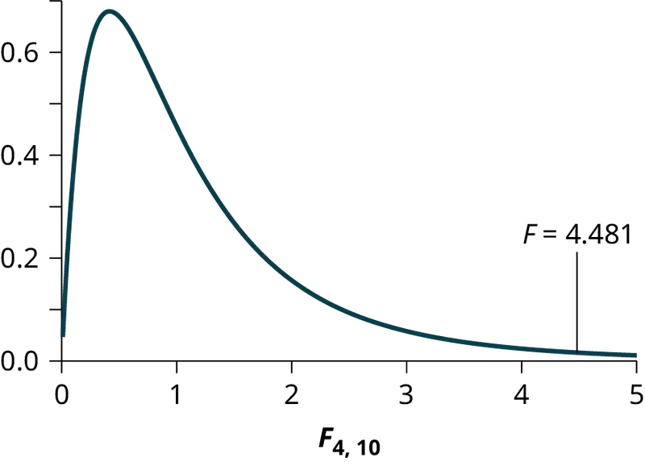
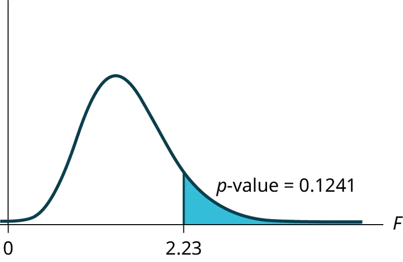
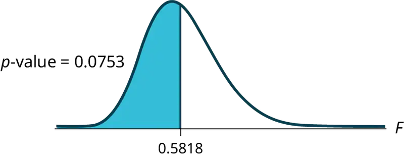
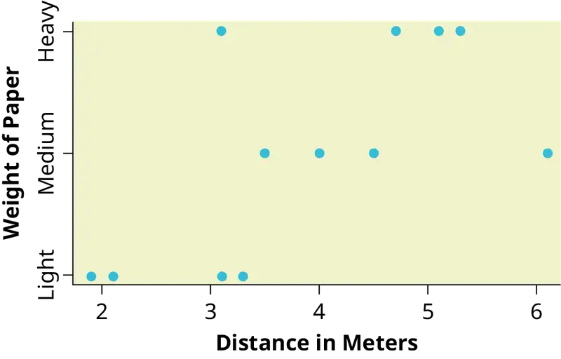
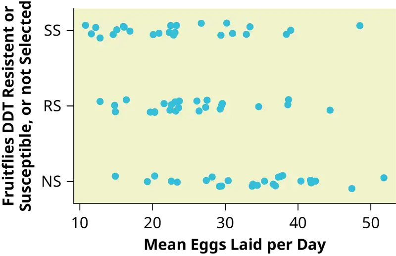
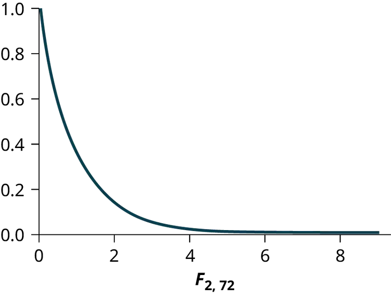
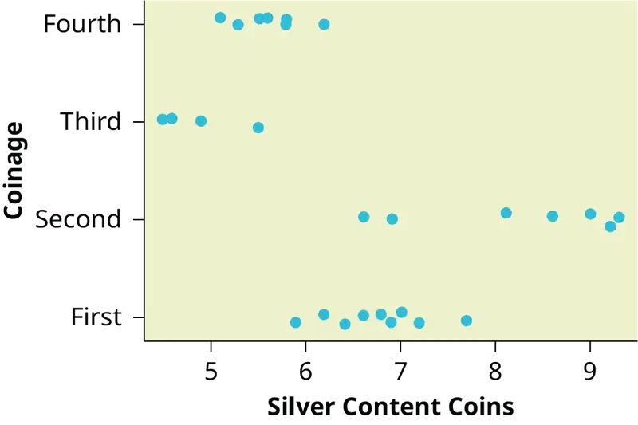
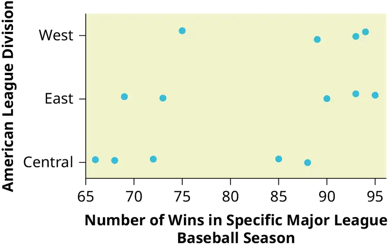

Chapter 13: F Distribution and One-Way ANOVA¶
Introduction¶
Chapter Outline: Chapter Objectives
By the end of this chapter, the student should be able to:
- Interpret the F probability distribution as the number of groups and the sample size change.
- Discuss two uses for the F distribution: one-way ANOVA and the test of two variances.
- Conduct and interpret one-way ANOVA.
- Conduct and interpret hypothesis tests of two variances.
Many statistical applications in psychology, social science, business administration, and the natural sciences involve several groups. For example, an environmentalist is interested in knowing if the average amount of pollution varies in several bodies of water. A sociologist is interested in knowing if the amount of income a person earns varies according to their upbringing. A consumer looking for a new car might compare the average gas mileage of several models.
For hypothesis tests comparing averages between more than two groups, statisticians have developed a method called "Analysis of Variance" (abbreviated ANOVA). In this chapter, you will study the simplest form of ANOVA called single factor or one-way ANOVA. You will also study the F distribution, used for one-way ANOVA, and the test of two variances. This is just a very brief overview of one-way ANOVA. You will study this topic in much greater detail in future statistics courses. One-Way ANOVA, as it is presented here, relies heavily on a calculator or computer.
13.1 One-Way ANOVA¶
The purpose of a one-way ANOVA test is to determine the existence of a statistically significant difference among several group means. The test actually uses variances to help determine if the means are equal or not. In order to perform a one-way ANOVA test, there are five basic assumptions to be fulfilled:
- Each population from which a sample is taken is assumed to be normal.
- All samples are randomly selected and independent.
- The populations are assumed to have equal standard deviations(or variances).
- The factor is a categorical variable.
- The response is a numerical variable.
The Null and Alternative Hypotheses¶
The null hypothesis is simply that all the group population means are the same. The alternative hypothesis is that at least one pair of means is different. For example, if there are k groups:
H0: μ1 = μ2 = μ3 = ... = μk
Ha: At least two of the group means μ1, μ2, μ3, ..., μk are not equal. That is, μi ≠ μj for some i ≠ j.
The graphs, a set of box plots representing the distribution of values with the group means indicated by a horizontal line through the box, help in the understanding of the hypothesis test. In the first graph (blue box plots), H0: μ1 = μ2 = μ3 and the three populations have the same distribution if the null hypothesis is true. The variance of the combined data is approximately the same as the variance of each of the populations.
If the null hypothesis is false, then the variance of the combined data is larger which is caused by the different means as shown in the second graph (green box plots).

13.2 The F Distribution and the F-Ratio¶
The distribution used for the hypothesis test is a new one. It is called the F distribution, named after Sir Ronald Fisher, an English statistician. The F statistic is a ratio (a fraction). There are two sets of degrees of freedom; one for the numerator and one for the denominator.
For example, if F follows an F distribution and the number of degrees of freedom for the numerator is four, and the number of degrees of freedom for the denominator is ten, then F ~ F4,10.
NOTE
The F distribution is derived from the Student's t-distribution. The values of the F distribution are squares of the corresponding values of the t-distribution. One-Way ANOVA expands the t-test for comparing more than two groups. The scope of that derivation is beyond the level of this course. It is preferable to use ANOVA when there are more than two groups instead of performing pairwise t-tests because performing multiple tests introduces the likelihood of making a Type 1 error.
To calculate the F ratio, two estimates of the variance are made.
- Variance between samples: An estimate of σ2 that is the variance of the sample means multiplied by n (when the sample sizes are the same.). If the samples are different sizes, the variance between samples is weighted to account for the different sample sizes. The variance is also called variation due to treatment or explained variation.
-
Variance within samples: An estimate of σ2 that is the average of the sample variances (also known as a pooled variance). When the sample sizes are different, the variance within samples is weighted. The variance is also called the variation due to error or unexplained variation.
-
SSbetween = the sum of squares that represents the variation among the different samples
- SSwithin = the sum of squares that represents the variation within samples that is due to chance.
To find a "sum of squares" means to add together squared quantities that, in some cases, may be weighted. We used sum of squares to calculate the sample variance and the sample standard deviation in Descriptive Statistics.
MS means "mean square." MSbetween is the variance between groups, and MSwithin is the variance within groups.
Calculation of Sum of Squares and Mean Square
- k = the number of different groups
- nj = the size of the jth group
- sj = the sum of the values in the jth group
- n = total number of all the values combined (total sample size: ∑nj)
- x = one value: ∑x = ∑sj
- Sum of squares of all values from every group combined: ∑x2
- Total sum of squares: \(SS_{\text{total}}=\sum x^{2}\frac{{\left( \sum x \right)}^{2}}{n}\)
- Explained variation: sum of squares representing variation among the different samples: SSbetween = \(\sum\left[ \frac{{(s_{j})}^{2}}{n_{j}} \right]-\frac{{(\sum s_{j})}^{2}}{n}\)
- Unexplained variation: sum of squares representing variation within samples due to chance: \(SS_{\text{within}}=SS_{\text{total}}-SS_{\text{between}}\)
- df's for different groups (df's for the numerator): \(df_{\text{between}}\) = k – 1
- Equation for errors within samples (df's for the denominator): dfwithin = n – k
- Mean square (variance estimate) explained by the different groups: MSbetween = \(\frac{SS_{\text{between}}}{df_{\text{between}}}\)
- Mean square (variance estimate) that is due to chance (unexplained): MSwithin = \(\frac{SS_{\text{within}}}{df_{\text{within}}}\)
MSbetween and MSwithin can be written as follows:
- \(MS_{\text{between}}=\frac{SS_{\text{between}}}{df_{\text{between}}}=\frac{SS_{\text{between}}}{k-1}\)
- \(MS_{within}=\frac{SS_{within}}{df_{within}}=\frac{SS_{within}}{n-k}\)
The one-way ANOVA test depends on the fact that MSbetween can be influenced by population differences among means of the several groups. Since MSwithin compares values of each group to its own group mean, the fact that group means might be different does not affect MSwithin.
The null hypothesis says that all groups are samples from populations having the same normal distribution. The alternate hypothesis says that at least two of the sample groups come from populations with different normal distributions. If the null hypothesis is true, MSbetween and MSwithin should both estimate the same value.
NOTE
The null hypothesis says that all the group population means are equal. The hypothesis of equal means implies that the populations have the same normal distribution, because it is assumed that the populations are normal and that they have equal variances.
F-Ratio or F Statistic
\(F=\frac{MS_{\text{between}}}{MS_{\text{within}}}\)
If MSbetween and MSwithin estimate the same value (following the belief that H0 is true), then the F-ratio should be approximately equal to one. Mostly, just sampling errors would contribute to variations away from one. As it turns out, MSbetween consists of the population variance plus a variance produced from the differences between the samples. MSwithin is an estimate of the population variance. Since variances are always positive, if the null hypothesis is false, MSbetween will generally be larger than MSwithin.Then the F-ratio will be larger than one. However, if the population effect is small, it is not unlikely that MSwithin will be larger in a given sample.
The foregoing calculations were done with groups of different sizes. If the groups are the same size, the calculations simplify somewhat and the F-ratio can be written as:
F-Ratio Formula when the groups are the same size
\(F=\frac{n\cdot s_{\bar{x}}{}^{2}}{s^{2}{}_{\text{pooled}}}\)
where ...
- n = the sample size
- dfnumerator = k – 1
- dfdenominator = n – k
- s2 pooled = the mean of the sample variances (pooled variance)
- \(s_{\bar{x}}{}^{2}\) = the variance of the sample means
Data are typically put into a table for easy viewing. One-Way ANOVA results are often displayed in this manner by computer software.
Table 13.1
| Source of Variation | Sum of Squares (SS) | Degrees of Freedom (df) | Mean Square (MS) | F |
|---|---|---|---|---|
| Factor (Between) |
SS(Factor) | k – 1 | MS(Factor) = SS(Factor)/(k – 1) | F = MS(Factor)/MS(Error) |
| Error (Within) |
SS(Error) | n – k | MS(Error) = SS(Error)/(n – k) | |
| Total | SS(Total) | n – 1 |
Example 13.1
Three different diet plans are to be tested for mean weight loss. The entries in the table are the weight losses for the different plans. The one-way ANOVA results are shown in Table 13.2.
Table 13.2
| Plan 1: n1 = 4 | Plan 2: n2 = 3 | Plan 3: n3 = 3 |
|---|---|---|
| 5 | 3.5 | 8 |
| 4.5 | 7 | 4 |
| 4 | 3.5 | |
| 3 | 4.5 |
s1 = 16.5, s2 =15, s3 = 15.5
Following are the calculations needed to fill in the one-way ANOVA table. The table is used to conduct a hypothesis test.
where n1 = 4, n2 = 3, n3 = 3 and n = n1 + n2 + n3 = 10
Using the Calculator
One-Way ANOVA Table: The formulas for SS(Total), SS(Factor) = SS(Between) and SS(Error) = SS(Within) as shown previously. The same information is provided by the TI calculator hypothesis test function ANOVA in STAT TESTS (syntax is ANOVA(L1, L2, L3) where L1, L2, L3 have the data from Plan 1, Plan 2, Plan 3 respectively).
Table 13.3
| Source of Variation | Sum of Squares (SS) | Degrees of Freedom (df) | Mean Square (MS) | F |
|---|---|---|---|---|
| Factor (Between) |
SS(Factor) = SS(Between) = 2.2458 |
k – 1 = 3 groups – 1 = 2 |
MS(Factor) = SS(Factor)/(k – 1) = 2.2458/2 = 1.1229 |
F = MS(Factor)/MS(Error) = 1.1229/2.9792 = 0.3769 |
| Error (Within) |
SS(Error) = SS(Within) = 20.8542 |
n – k = 10 total data – 3 groups = 7 |
MS(Error) = SS(Error)/(n – k) = 20.8542/7 = 2.9792 |
|
| Total | SS(Total) = 2.2458 + 20.8542 = 23.1 |
n – 1 = 10 total data – 1 = 9 |
Try It
As part of an experiment to see how different types of soil cover would affect slicing tomato production, Marist College students grew tomato plants under different soil cover conditions. Groups of three plants each had one of the following treatments
- bare soil
- a commercial ground cover
- black plastic
- straw
- compost
All plants grew under the same conditions and were the same variety. Students recorded the weight (in grams) of tomatoes produced by each of the n = 15 plants:
Table 13.4
| Bare: n1 = 3 | Ground Cover: n2 = 3 | Plastic: n3 = 3 | Straw: n4 = 3 | Compost: n5 = 3 |
|---|---|---|---|---|
| 2,625 | 5,348 | 6,583 | 7,285 | 6,277 |
| 2,997 | 5,682 | 8,560 | 6,897 | 7,818 |
| 4,915 | 5,482 | 3,830 | 9,230 | 8,677 |
Create the one-way ANOVA table.
The one-way ANOVA hypothesis test is always right-tailed because larger F-values are way out in the right tail of the F-distribution curve and tend to make us reject H0.
Notation¶
The notation for the F distribution is F ~ Fdf(num),df(denom)
where df(num) = dfbetween and df(denom) = dfwithin
The mean for the F distribution is \(\mu=\frac{df(denom)}{df(denom)-2}\)
13.3 Facts About the F Distribution¶
Here are some facts about the F distribution.
- The curve is not symmetrical but skewed to the right.
- There is a different curve for each set of dfs.
- The F statistic is greater than or equal to zero.
- As the degrees of freedom for the numerator and for the denominator get larger, the curve approximates the normal.
- Other uses for the F distribution include comparing two variances and two-way Analysis of Variance. Two-Way Analysis is beyond the scope of this chapter.
![This graph has an unmarked Y axis and then an X axis that ranges from 0.00 to 4.00. It has three plot lines. The plot line labelled F subscript 1, 5 starts near the top of the Y axis at the extreme left of the graph and drops quickly to near the bottom at 0.50, at which point is slowly decreases in a curved fashion to the 4.00 mark on the X axis. The plot line labelled F subscript 100, 100 remains at Y = 0 for much of its length, except for a distinct peak between 0.50 and 1.50. The peak is a smooth curve that reaches about half way up the Y axis at its peak. The plot line labeled F subscript 5, 10 increases slightly as it progresses from 0.00 to 0.50, after which it peaks and slowly decreases down the remainder of the X axis. The peak only reaches about one fifth up the height of the Y axis.](img/is2e-figure-12-00-007.webp)
Example 13.2
Let’s return to the slicing tomato exercise in Example 13.1. The means of the tomato yields under the five mulching conditions are represented by μ1, μ2, μ3, μ4, μ5. We will conduct a hypothesis test to determine if all means are the same or at least one is different. Using a significance level of 5%, test the null hypothesis that there is no difference in mean yields among the five groups against the alternative hypothesis that at least one mean is different from the rest.
Solution
The null and alternative hypotheses are:
H0: μ1 = μ2 = μ3 = μ4 = μ5
Ha: μi ≠ μj some i ≠ j
The one-way ANOVA results are shown in Table 13.5
Table 13.5
| Source of Variation | Sum of Squares (SS) | Degrees of Freedom (df) | Mean Square (MS) | F |
|---|---|---|---|---|
| Factor (Between) | 36,648,561 | 5 – 1 = 4 | \(\frac{36{,}648{,}561}{4}\ \text{= 9,162,140}\) | \(\frac{9{,}162{,}140}{2{,}044{,}672.6}\ \text{= 4}.4810\) |
| Error (Within) | 20,446,726 | 15 – 5 = 10 | \(\frac{20{,}446{,}726}{10}\ \text{= 2,044,672}.6\) | |
| Total | 57,095,287 | 15 – 1 = 14 |
Distribution for the test: F4,10
df(num) = 5 – 1 = 4
df(denom) = 15 – 5 = 10
Test statistic: F = 4.4810

Probability Statement: p-value = P(F > 4.481) = 0.0248.
Compare α and the p-value: α = 0.05, p-value = 0.0248
Make a decision: Since α > p-value, we reject H0.
Conclusion: At the 5% significance level, we have reasonably strong evidence that differences in mean yields for slicing tomato plants grown under different mulching conditions are unlikely to be due to chance alone. We may conclude that at least some of mulches led to different mean yields.
Using the Calculator
To find these results on the calculator:
Press STAT. Press 1:EDIT. Put the data into the lists L1, L2, L3, L4, L5.
Press STAT, and arrow over to TESTS, and arrow down to ANOVA. Press ENTER, and then enter L1, L2, L3, L4, L5). Press ENTER. You will see that the values in the foregoing ANOVA table are easily produced by the calculator, including the test statistic and the p-value of the test.
The calculator displays:
F = 4.4810
p = 0.0248 (p-value)
Factor
df = 4
SS = 36648560.9
MS = 9162140.23
Error
df = 10
SS = 20446726
MS = 2044672.6
Try It
There are multiple variants of the virus that causes COVID-19. The length of hospital stays for patients afflicted with various strains of COVID-19 is shown in Table 13.6.
Table 13.6
| Delta Strain | Omicron Strain | Alpha Strain | Gamma Strain | Beta Strain |
|---|---|---|---|---|
| 13.9 | 11.7 | 18.2 | 16.9 | 9.3 |
| 14.9 | 15.1 | 14.6 | 12.8 | 15.8 |
| 16.8 | 9.9 | 10.1 | 11.2 | 16.4 |
Test whether the mean length of hospital stay is the same or different for the various strains of COVID-19. Construct the ANOVA table, find the p-value, and state your conclusion. Use a 5% significance level.
Answer
We test for equality of mean length of hospital stay:
\(H_{0}:\mu_{1}=\mu_{2}=\mu_{3}=\mu_{4}=\mu_{5}\)
\(H_{a}:\mu_{i}\neq\mu_{j},\mathrm{some}\mathrm{i}\neq j\)
The one-way ANOVA table results are shown:
Table 13.7
| Source of Variation | Sum of Squares (SS) | Degrees of Freedom (df) | Mean Square (MS) | F | P-value |
|---|---|---|---|---|---|
| Factor (Between) | 14.056 | 5 – 1 = 4 | 3.514 | 0.353095 | 0.8362 |
| Error (Within) | 99.52 | 15 – 5 = 10 | 9.952 | ||
| Total | 113.576 | 15 – 1 = 14 |
Distribution for the test: \(F4,10\)
Probability Statement: \(p-value=P(F \gt 0.3531)=0.8362\)
Compare and the p-value: \(\alpha=0.05,p-value=08362,\alpha \gt p-value\)
Make a decision: Since > p-value, we do not reject \(H_{0}\).
Conclusion: At the 5% significance level, there is insufficient evidence from these data that different strains of COVID-19 virus will cause a significant difference in the length of a hospital stay.
Example 13.3
Four sororities took a random sample of sisters regarding their grade means for the past term. The results are shown in Table 13.8.
Table 13.8 MEAN GRADES FOR FOUR SORORITIES
| Sorority 1 | Sorority 2 | Sorority 3 | Sorority 4 |
|---|---|---|---|
| 2.17 | 2.63 | 2.63 | 3.79 |
| 1.85 | 1.77 | 3.78 | 3.45 |
| 2.83 | 3.25 | 4.00 | 3.08 |
| 1.69 | 1.86 | 2.55 | 2.26 |
| 3.33 | 2.21 | 2.45 | 3.18 |
Using a significance level of 1%, is there a difference in mean grades among the sororities?
Solution
Let μ1, μ2, μ3, μ4 be the population means of the sororities. Remember that the null hypothesis claims that the sorority groups are from the same normal distribution. The alternate hypothesis says that at least two of the sorority groups come from populations with different normal distributions. Notice that the four sample sizes are each five.
NOTE
This is an example of a balanced design, because each factor (i.e., sorority) has the same number of observations.
H0: μ1 = μ2 = μ3 = μ4
Ha: Not all of the means μ1, μ2, μ3, μ4 are equal.
Distribution for the test: F3,16
where k = 4 groups and n = 20 samples in total
df(num)= k – 1 = 4 – 1 = 3
df(denom) = n – k = 20 – 4 = 16
Calculate the test statistic: F = 2.23
Graph:

Probability statement: p-value = P(F > 2.23) = 0.1241
Compare α and the p-value: α = 0.01
p-value = 0.1241
α < p-value
Make a decision: Since α < p-value, you cannot reject H0.
Conclusion: There is not sufficient evidence to conclude that there is a difference among the mean grades for the sororities.
Using the Calculator
Put the data into lists L1, L2, L3, and L4. Press STAT and arrow over to TESTS. Arrow down to F:ANOVA. Press ENTER and Enter (L1,L2,L3,L4).
The calculator displays the F statistic, the p-value and the values for the one-way ANOVA table:
F = 2.2303
p = 0.1241 (p-value)
Factor
df = 3
SS = 2.88732
MS = 0.96244
Error
df = 16
SS = 6.9044
MS = 0.431525
Try It
Four sports teams took a random sample of players regarding their GPAs for the last year. The results are shown in Table 13.9.
Table 13.9 GPAs FOR FOUR SPORTS TEAMS
| Basketball | Baseball | Hockey | Lacrosse |
|---|---|---|---|
| 3.6 | 2.1 | 4.0 | 2.0 |
| 2.9 | 2.6 | 2.0 | 3.6 |
| 2.5 | 3.9 | 2.6 | 3.9 |
| 3.3 | 3.1 | 3.2 | 2.7 |
| 3.8 | 3.4 | 3.2 | 2.5 |
Use a significance level of 5%, and determine if there is a difference in GPA among the teams.
Example 13.4
A fourth grade class is studying the environment. One of the assignments is to grow bean plants in different soils. Tommy chose to grow his bean plants in soil found outside his classroom mixed with dryer lint. Tara chose to grow her bean plants in potting soil bought at the local nursery. Nick chose to grow his bean plants in soil from his mother's garden. No chemicals were used on the plants, only water. They were grown inside the classroom next to a large window. Each child grew five plants. At the end of the growing period, each plant was measured, producing the data (in inches) in Table 13.10.
Table 13.10
| Tommy's Plants | Tara's Plants | Nick's Plants |
|---|---|---|
| 24 | 25 | 23 |
| 21 | 31 | 27 |
| 23 | 23 | 22 |
| 30 | 20 | 30 |
| 23 | 28 | 20 |
Does it appear that the three media in which the bean plants were grown produce the same mean height? Test at a 3% level of significance.
Solution
This time, we will perform the calculations that lead to the F' statistic. Notice that each group has the same number of plants, so we will use the formula F' = \(\frac{n\cdot s_{\bar{x}}{}^{2}}{s^{2}{}_{\text{pooled}}}\) .
First, calculate the sample mean and sample variance of each group.
Table 13.11
| Tommy's Plants | Tara's Plants | Nick's Plants | |
|---|---|---|---|
| Sample Mean | 24.2 | 25.4 | 24.4 |
| Sample Variance | 11.7 | 18.3 | 16.3 |
Next, calculate the variance of the three group means (Calculate the variance of 24.2, 25.4, and 24.4). Variance of the group means = 0.413 = \(s_{\bar{x}}{}^{2}\)
Then MSbetween = \(ns_{\bar{x}}{}^{2}\) = (5)(0.413) where n = 5 is the sample size (number of plants each child grew).
Calculate the mean of the three sample variances (Calculate the mean of 11.7, 18.3, and 16.3). Mean of the sample variances = 15.433 = s2 pooled
Then MSwithin = s2pooled = 15.433.
The F statistic (or F ratio) is \(F=\frac{MS_{\text{between}}}{MS_{\text{within}}}=\frac{ns_{\bar{x}}{}^{2}}{s^{2}{}_{pooled}}=\frac{(5)(0.413)}{15.433}=0.134\)
The dfs for the numerator = the number of groups – 1 = 3 – 1 = 2.
The dfs for the denominator = the total number of samples – the number of groups = 15 – 3 = 12
The distribution for the test is F2,12 and the F statistic is F = 0.134
The p-value is P(F > 0.134) = 0.8759.
Decision: Since α = 0.03 and the p-value = 0.8759, do not reject H0. (Why?)
Conclusion: With a 3% level of significance, from the sample data, the evidence is not sufficient to conclude that the mean heights of the bean plants are different.
Using the Calculator
To calculate the p-value:
*Press 2nd DISTR
*Arrow down to Fcdf(and press ENTER.
*Enter 0.134, E99, 2, 12)
*Press ENTER
The p-value is 0.8759.
Try It
Another fourth grader also grew bean plants, but this time in a jelly-like mass. The heights were (in inches) 24, 28, 25, 30, and 32. Do a one-way ANOVA test on the four groups. Are the heights of the bean plants different? Use the same method as shown in Example 13.4.
Collaborative Exercise
From the class, create four groups of the same size as follows: men under 22, men at least 22, women under 22, women at least 22. Have each member of each group record the number of states in the United States they have visited. Run an ANOVA test to determine if the average number of states visited in the four groups are the same. Test at a 1% level of significance. Use one of the solution sheets in Appendix E Solution Sheets.
13.4 Test of Two Variances¶
Another of the uses of the F distribution is testing two variances. It is often desirable to compare two variances rather than two averages. For instance, college administrators would like two college professors grading exams to have the same variation in their grading. In order for a lid to fit a container, the variation in the lid and the container should be the same. A supermarket might be interested in the variability of check-out times for two checkers.
In order to perform a F test of two variances, it is important that the following are true:
- The populations from which the two samples are drawn are normally distributed.
- The two populations are independent of each other.
Unlike most other tests in this book, the F test for equality of two variances is very sensitive to deviations from normality. If the two distributions are not normal, the test can give higher p-values than it should, or lower ones, in ways that are unpredictable. Many texts suggest that students not use this test at all, but in the interest of completeness we include it here.
Suppose we sample randomly from two independent normal populations. Let \(\sigma_{1}^{2}\) and \(\sigma_{2}^{2}\) be the population variances and \(s_{1}^{2}\) and \(s_{2}^{2}\) be the sample variances. Let the sample sizes be n1 and n2. Since we are interested in comparing the two sample variances, we use the F ratio:
\(F=\frac{\left[ \frac{{(s_{1})}^{2}}{{(\sigma_{1})}^{2}} \right]}{\left[ \frac{{(s_{2})}^{2}}{{(\sigma_{2})}^{2}} \right]}\)
F has the distribution F ~ F(n1 – 1, n2 – 1)
where n1 – 1 are the degrees of freedom for the numerator and n2 – 1 are the degrees of freedom for the denominator.
If the null hypothesis is \(\sigma_{1}^{2}=\sigma_{2}^{2}\), then the F Ratio becomes \(F=\frac{\left[ \frac{{(s_{1})}^{2}}{{(\sigma_{1})}^{2}} \right]}{\left[ \frac{{(s_{2})}^{2}}{{(\sigma_{2})}^{2}} \right]}=\frac{{(s_{1})}^{2}}{{(s_{2})}^{2}}\).
NOTE
The F ratio could also be \(\frac{{(s_{2})}^{2}}{{(s_{1})}^{2}}\). It depends on Ha and on which sample variance is larger.
If the two populations have equal variances, then \(s_{1}^{2}\) and \(s_{2}^{2}\) are close in value and \(F=\frac{{(s_{1})}^{2}}{{(s_{2})}^{2}}\) is close to one. But if the two population variances are very different, \(s_{1}^{2}\) and \(s_{2}^{2}\) tend to be very different, too. Choosing \(s_{1}^{2}\) as the larger sample variance causes the ratio \(\frac{{(s_{1})}^{2}}{{(s_{2})}^{2}}\) to be greater than one. If \(s_{1}^{2}\) and \(s_{2}^{2}\) are far apart, then \(F=\frac{{(s_{1})}^{2}}{{(s_{2})}^{2}}\) is a large number.
Therefore, if F is close to one, the evidence favors the null hypothesis (the two population variances are equal). But if F is much larger than one, then the evidence is against the null hypothesis. A test of two variances may be left, right, or two-tailed.
Example 13.5
Two college instructors are interested in whether or not there is any variation in the way they grade math exams. They each grade the same set of 30 exams. The first instructor's grades have a variance of 52.3. The second instructor's grades have a variance of 89.9. Test the claim that the first instructor's variance is smaller. (In most colleges, it is desirable for the variances of exam grades to be nearly the same among instructors.) The level of significance is 10%.
Solution
Let 1 and 2 be the subscripts that indicate the first and second instructor, respectively.
n1 = n2 = 30.
H0: \(\sigma_{1}^{2}=\sigma_{2}^{2}\) and Ha: \(\sigma_{1}^{2}\ \text{ \lt }\ \sigma_{2}^{2}\)
Calculate the test statistic: By the null hypothesis \(\text{(}\sigma_{1}^{2}\ \text{=}\ \sigma_{2}^{2}\text{)}\), the F statistic is:
\(F=\frac{\left[ \frac{{(s_{1})}^{2}}{{(\sigma_{1})}^{2}} \right]}{\left[ \frac{{(s_{2})}^{2}}{{(\sigma_{2})}^{2}} \right]}=\frac{{(s_{1})}^{2}}{{(s_{2})}^{2}}=\frac{52.3}{89.9}=0.5818\)
Distribution for the test: F29,29 where n1 – 1 = 29 and n2 – 1 = 29.
Graph: This test is left tailed.
Draw the graph labeling and shading appropriately.

Probability statement: p-value = P(F < 0.5818) = 0.0753
Compare α and the p-value: α = 0.10 α > p-value.
Make a decision: Since α > p-value, reject H0.
Conclusion: With a 10% level of significance, from the data, there is sufficient evidence to conclude that the variance in grades for the first instructor is smaller.
Using the Calculator
Press STAT and arrow over to TESTS. Arrow down to D:2-SampFTest. Press ENTER. Arrow to Stats and press ENTER. For Sx1, n1, Sx2, and n2, enter (52.3), 30, (89.9), and 30. Press ENTER after each. Arrow to σ1: and σ2. Press ENTER. Arrow down to Calculate and press ENTER. F = 0.5818 and p-value = 0.0753. Do the procedure again and try Draw instead of Calculate.
Try It
The New York Choral Society divides its singers who are men up into four categories from highest voices to lowest: Tenor1, Tenor2, Bass1, Bass2. In the table are heights of the men in the Tenor1 and Bass2 groups. One suspects that taller men will have lower voices, and that the variance of height may go up with the lower voices as well. Do we have good evidence that the variance of the heights of singers in each of these two groups (Tenor1 and Bass2) are different?
Table 13.12
| Tenor1 | Bass2 | Tenor 1 | Bass 2 | Tenor 1 | Bass 2 |
|---|---|---|---|---|---|
| 69 | 72 | 67 | 72 | 68 | 67 |
| 72 | 75 | 70 | 74 | 67 | 70 |
| 71 | 67 | 65 | 70 | 64 | 70 |
| 66 | 75 | 72 | 66 | 69 | |
| 76 | 74 | 70 | 68 | 72 | |
| 74 | 72 | 68 | 75 | 71 | |
| 71 | 72 | 64 | 68 | 74 | |
| 66 | 74 | 73 | 70 | 75 | |
| 68 | 72 | 66 | 72 |
13.5 Lab: One-Way ANOVA¶
Lab: One-Way ANOVA
Class Time:
Names:
Student Learning Outcome
- The student will conduct a simple one-way ANOVA test involving three variables.
Collect the Data
1. Record the price per pound of eight fruits, eight vegetables, and eight breads in your local supermarket.
Table 13.13
| Fruits | Vegetables | Breads |
|---|---|---|
2. Explain how you could try to collect the data randomly.
Analyze the Data and Conduct a Hypothesis Test
-
State the null hypothesis and the alternative hypothesis.
-
Compute the following:
a. Fruit:
i. \(\bar{x}\) = ______
ii. \(s_{x}\) = ______
iii. n = ______
b. Vegetables:
i. \(\bar{x}\) = ______
ii. \(s_{x}\) = ______
iii. n = ______
c. Bread:
i. \(\bar{x}\) = ______
ii. \(s_{x}\) = ______
iii. n = ______
-
Find the following:
a. df(num) = ______
b. df(denom) = ______
-
State the approximate distribution for the test.
-
Test statistic: F = ______
-
Sketch a graph of this situation. CLEARLY, label and scale the horizontal axis and shade the region(s) corresponding to the p-value.
-
p-value = ______
-
Test at α = 0.05. State your decision and conclusion.
-
a. Decision: Why did you make this decision?
b. Conclusion (write a complete sentence).
c. Based on the results of your study, is there a need to investigate any of the food groups’ prices? Why or why not?
Chapter Review¶
Key Terms¶
- Analysis of Variance
- also referred to as ANOVA, is a method of testing whether or not the means of three or more populations are equal. The method is applicable if: all populations of interest are normally distributed.; the populations have equal standard deviations.; samples (not necessarily of the same size) are randomly and independently selected from each population. The test statistic for analysis of variance is the F-ratio.
- One-Way ANOVA
- a method of testing whether or not the means of three or more populations are equal; the method is applicable if: all populations of interest are normally distributed.; the populations have equal standard deviations.; samples (not necessarily of the same size) are randomly and independently selected from each population.; there is one independent variable and one dependent variable. The test statistic for analysis of variance is the F-ratio.
- Variance
- mean of the squared deviations from the mean; the square of the standard deviation. For a set of data, a deviation can be represented as x – \(\bar{x}\) where x is a value of the data and \(\bar{x}\) is the sample mean. The sample variance is equal to the sum of the squares of the deviations divided by the difference of the sample size and one.
Chapter Review¶
13.1 One-Way ANOVA¶
Analysis of variance extends the comparison of two groups to several, each a level of a categorical variable (factor). Samples from each group are independent, and must be randomly selected from normal populations with equal variances. We test the null hypothesis of equal means of the response in every group versus the alternative hypothesis of one or more group means being different from the others. A one-way ANOVA hypothesis test determines if several population means are equal. The distribution for the test is the F distribution with two different degrees of freedom.
Assumptions:
- Each population from which a sample is taken is assumed to be normal.
- All samples are randomly selected and independent.
- The populations are assumed to have equal standard deviations (or variances).
13.2 The F Distribution and the F-Ratio¶
Analysis of variance compares the means of a response variable for several groups. ANOVA compares the variation within each group to the variation of the mean of each group. The ratio of these two is the F statistic from an F distribution with (number of groups – 1) as the numerator degrees of freedom and (number of observations – number of groups) as the denominator degrees of freedom. These statistics are summarized in the ANOVA table.
13.3 Facts About the F Distribution¶
The graph of the F distribution is always positive and skewed right, though the shape can be mounded or exponential depending on the combination of numerator and denominator degrees of freedom. The F statistic is the ratio of a measure of the variation in the group means to a similar measure of the variation within the groups. If the null hypothesis is correct, then the numerator should be small compared to the denominator. A small F statistic will result, and the area under the F curve to the right will be large, representing a large p-value. When the null hypothesis of equal group means is incorrect, then the numerator should be large compared to the denominator, giving a large F statistic and a small area (small p-value) to the right of the statistic under the F curve.
When the data have unequal group sizes (unbalanced data), then techniques from 13.2 The F Distribution and the F-Ratio need to be used for hand calculations. In the case of balanced data (the groups are the same size) however, simplified calculations based on group means and variances may be used. In practice, of course, software is usually employed in the analysis. As in any analysis, graphs of various sorts should be used in conjunction with numerical techniques. Always look of your data!
13.4 Test of Two Variances¶
The F test for the equality of two variances rests heavily on the assumption of normal distributions. The test is unreliable if this assumption is not met. If both distributions are normal, then the ratio of the two sample variances is distributed as an F statistic, with numerator and denominator degrees of freedom that are one less than the samples sizes of the corresponding two groups. A test of two variances hypothesis test determines if two variances are the same. The distribution for the hypothesis test is the F distribution with two different degrees of freedom.
Assumptions:
- The populations from which the two samples are drawn are normally distributed.
- The two populations are independent of each other.
Formula Review¶
13.2 The F Distribution and the F-Ratio¶
\(SS_{\text{between}}={\displaystyle \sum}^{}\left[ \frac{{(s_{j})}^{2}}{n_{j}} \right]-\frac{{\left( {\displaystyle \sum}^{}s_{j} \right)}^{2}}{n}\)
\(SS_{\text{total}}={\displaystyle \sum}^{}x^{2}-\frac{{\left( {\displaystyle \sum}^{}x \right)}^{2}}{n}\)
\(SS_{\text{within}}=SS_{\text{total}}-SS_{\text{between}}\)
dfbetween = df(num) = k – 1
dfwithin = df(denom) = n – k
MSbetween = \(\frac{SS_{\text{between}}}{df_{\text{between}}}\)
MSwithin = \(\frac{SS_{\text{within}}}{df_{\text{within}}}\)
F = \(\frac{MS_{\text{between}}}{MS_{\text{within}}}\)
F ratio when the groups are the same size: F = \(\frac{ns_{\bar{x}}{}^{2}}{s^{2}{}_{pooled}}\)
Mean of the F distribution: µ = \(\frac{df(num)}{df(denom)-2}\)
where:
- k = the number of groups
- nj = the size of the jth group
- sj = the sum of the values in the jth group
- n = the total number of all values (observations) combined
- x = one value (one observation) from the data
- \(s_{\bar{x}}{}^{2}\) = the variance of the sample means
- \(s^{2}{}_{pooled}\) = the mean of the sample variances (pooled variance)
13.4 Test of Two Variances¶
F has the distribution F ~ F(n1 – 1, n2 – 1)
F = \(\frac{\frac{s_{1}^{2}}{\sigma_{1}^{2}}}{\frac{s_{2}^{2}}{\sigma_{2}^{2}}}\)
If σ1 = σ2, then F = \(\frac{s_{1}{}^{2}}{s_{2}{}^{2}}\)
Practice¶
13.1 One-Way ANOVA¶
Use the following information to answer the next five exercises. There are five basic assumptions that must be fulfilled in order to perform a one-way ANOVA test. What are they?
1. Write one assumption.
Answer
Each population from which a sample is taken is assumed to be normal.
2. Write another assumption.
3. Write a third assumption.
Answer
The populations are assumed to have equal standard deviations (or variances).
4. Write a fourth assumption.
5. Write the final assumption.
Answer
The response is a numerical value.
6. State the null hypothesis for a one-way ANOVA test if there are four groups.
7. State the alternative hypothesis for a one-way ANOVA test if there are three groups.
Answer
Ha: At least two of the group means μ1, μ2, μ3 are not equal.
8. When do you use an ANOVA test?
13.2 The F Distribution and the F-Ratio¶
Use the following information to answer the next eight exercises. Groups of men from three different areas of the country are to be tested for mean weight. The entries in Table 13.14 are the weights for the different groups.
Table 13.14
| Group 1 | Group 2 | Group 3 |
|---|---|---|
| 216 | 202 | 170 |
| 198 | 213 | 165 |
| 240 | 284 | 182 |
| 187 | 228 | 197 |
| 176 | 210 | 201 |
9. What is the Sum of Squares Factor?
Answer
4,939.2
10. What is the Sum of Squares Error?
11. What is the df for the numerator?
Answer
2
12. What is the df for the denominator?
13. What is the Mean Square Factor?
Answer
2,469.6
14. What is the Mean Square Error?
15. What is the F statistic?
Answer
3.7416
Use the following information to answer the next eight exercises. Girls from four different soccer teams are to be tested for mean goals scored per game. The entries in the table are the goals per game for the different teams. The one-way ANOVA results are shown in Table 13.15.
Table 13.15
| Team 1 | Team 2 | Team 3 | Team 4 |
|---|---|---|---|
| 1 | 2 | 0 | 3 |
| 2 | 3 | 1 | 4 |
| 0 | 2 | 1 | 4 |
| 3 | 4 | 0 | 3 |
| 2 | 4 | 0 | 2 |
16. What is SSbetween?
17. What is the df for the numerator?
Answer
3
18. What is MSbetween?
19. What is SSwithin?
Answer
13.2
20. What is the df for the denominator?
21. What is MSwithin?
Answer
0.825
22. What is the F statistic?
23. Judging by the F statistic, do you think it is likely or unlikely that you will reject the null hypothesis?
Answer
Because a one-way ANOVA test is always right-tailed, a high F statistic corresponds to a low p-value, so it is likely that we will reject the null hypothesis.
13.3 Facts About the F Distribution¶
24. An F statistic can have what values?
25. What happens to the curves as the degrees of freedom for the numerator and the denominator get larger?
Answer
The curves approximate the normal distribution.
Use the following information to answer the next seven exercise. Four basketball teams took a random sample of players regarding how high each player can jump (in inches). The results are shown in Table 13.16.
Table 13.16
| Team 1 | Team 2 | Team 3 | Team 4 | Team 5 |
|---|---|---|---|---|
| 36 | 32 | 48 | 38 | 41 |
| 42 | 35 | 50 | 44 | 39 |
| 51 | 38 | 39 | 46 | 40 |
26. What is the df(num)?
27. What is the df(denom)?
Answer
ten
28. What are the Sum of Squares and Mean Squares Factors?
29. What are the Sum of Squares and Mean Squares Errors?
Answer
SS = 237.33; MS = 23.73
30. What is the F statistic?
31. What is the p-value?
Answer
0.1614
32. At the 5% significance level, is there a difference in the mean jump heights among the teams?
Use the following information to answer the next seven exercises. A video game developer is testing a new game on three different groups. Each group represents a different target market for the game. The developer collects scores from a random sample from each group. The results are shown in Table 13.17
Table 13.17
| Group A | Group B | Group C |
|---|---|---|
| 101 | 151 | 101 |
| 108 | 149 | 109 |
| 98 | 160 | 198 |
| 107 | 112 | 186 |
| 111 | 126 | 160 |
33. What is the df(num)?
Answer
two
34. What is the df(denom)?
35. What are the SSbetween and MSbetween?
Answer
SS = 5,700.4;
MS = 2,850.2
36. What are the SSwithin and MSwithin?
37. What is the F Statistic?
Answer
3.6101
38. What is the p-value?
39. At the 10% significance level, are the scores among the different groups different?
Answer
Yes, there is enough evidence to show that the scores among the groups are statistically significant at the 10% level.
Use the following information to answer the next three exercises. Suppose a group is interested in determining whether teenagers obtain their drivers licenses at approximately the same average age across the country. Suppose that the following data are randomly collected from five teenagers in each region of the country. The numbers represent the age at which teenagers obtained their drivers licenses.
Table 13.18
| Northeast | South | West | Central | East | |
|---|---|---|---|---|---|
| 16.3 | 16.9 | 16.4 | 16.2 | 17.1 | |
| 16.1 | 16.5 | 16.5 | 16.6 | 17.2 | |
| 16.4 | 16.4 | 16.6 | 16.5 | 16.6 | |
| 16.5 | 16.2 | 16.1 | 16.4 | 16.8 | |
| \(\bar{x}=\) | |||||
| \(s^{2}=\) |
Enter the data into your calculator or computer.
40. p-value = ______
State the decisions and conclusions (in complete sentences) for the following preconceived levels of α.
41. α = 0.05
a. Decision: ____________________________
b. Conclusion: ____________________________
42. α = 0.01
a. Decision: ____________________________
b. Conclusion: ____________________________
13.4 Test of Two Variances¶
Use the following information to answer the next two exercises. There are two assumptions that must be true in order to perform an F test of two variances.
43. Name one assumption that must be true.
Answer
The populations from which the two samples are drawn are normally distributed.
44. What is the other assumption that must be true?
Use the following information to answer the next five exercises. Two coworkers commute from the same building. They are interested in whether or not there is any variation in the time it takes them to drive to work. They each record their times for 20 commutes. The first worker’s times have a variance of 12.1. The second worker’s times have a variance of 16.9. The first worker thinks that he is more consistent with his commute times. Test the claim at the 10% level. Assume that commute times are normally distributed.
45. State the null and alternative hypotheses.
Answer
H0: σ1 = σ2
Ha: σ1 < σ2
or
H0: \(\sigma_{1}^{2}\ \text{=}\ \sigma_{2}^{2}\)
Ha: \(\sigma_{1}^{2} \lt \sigma_{2}^{2}\)
46. What is s1 in this problem?
47. What is s2 in this problem?
Answer
4.11
48. What is n?
49. What is the F statistic?
Answer
0.7159
50. What is the p-value?
51. Is the claim accurate?
Answer
No, at the 10% level of significance, we do not reject the null hypothesis and state that the data do not show that the variation in drive times for the first worker is less than the variation in drive times for the second worker.
Use the following information to answer the next four exercises. Two students are interested in whether or not there is variation in their test scores for math class. There are 15 total math tests they have taken so far. The first student’s grades have a standard deviation of 38.1. The second student’s grades have a standard deviation of 22.5. The second student thinks his scores are more consistent.
52. State the null and alternative hypotheses.
53. What is the F Statistic?
Answer
2.8674
54. What is the p-value?
55. At the 5% significance level, do we reject the null hypothesis?
Answer
Reject the null hypothesis. There is enough evidence to say that the variance of the grades for the first student is higher than the variance in the grades for the second student.
Use the following information to answer the next three exercises. Two cyclists are comparing the variances of their overall paces going uphill. Each cyclist records their speeds going up 35 hills. The first cyclist has a variance of 23.8 and the second cyclist has a variance of 32.1. The cyclists want to see if their variances are the same or different. Assume that commute times are normally distributed.
56. State the null and alternative hypotheses.
57. What is the F Statistic?
Answer
0.7414
58. At the 5% significance level, what can we say about the cyclists’ variances?
Homework¶
13.1 One-Way ANOVA¶
59. Three different traffic routes are tested for mean driving time. The entries in the Table 13.19 are the driving times in minutes on the three different routes.
Table 13.19
| Route 1 | Route 2 | Route 3 |
|---|---|---|
| 30 | 27 | 16 |
| 32 | 29 | 41 |
| 27 | 28 | 22 |
| 35 | 36 | 31 |
State SSbetween, SSwithin, and the F statistic.
Answer
SSbetween = 26
SSwithin = 441
F = 0.2653
60. Suppose a group is interested in determining whether teenagers obtain their drivers licenses at approximately the same average age across the country. Suppose that the following data are randomly collected from five teenagers in each region of the country. The numbers represent the age at which teenagers obtained their drivers licenses.
Table 13.20
| Northeast | South | West | Central | East | |
|---|---|---|---|---|---|
| 16.3 | 16.9 | 16.4 | 16.2 | 17.1 | |
| 16.1 | 16.5 | 16.5 | 16.6 | 17.2 | |
| 16.4 | 16.4 | 16.6 | 16.5 | 16.6 | |
| 16.5 | 16.2 | 16.1 | 16.4 | 16.8 | |
| \(\bar{x}=\) | |||||
| \(s^{2}=\) |
State the hypotheses.
H0: ____________
Ha: ____________
13.2 The F Distribution and the F-Ratio¶
Use the following information to answer the next three exercises. Suppose a group is interested in determining whether teenagers obtain their drivers licenses at approximately the same average age across the country. Suppose that the following data are randomly collected from five teenagers in each region of the country. The numbers represent the age at which teenagers obtained their drivers licenses.
Table 13.21
| Northeast | South | West | Central | East | |
|---|---|---|---|---|---|
| 16.3 | 16.9 | 16.4 | 16.2 | 17.1 | |
| 16.1 | 16.5 | 16.5 | 16.6 | 17.2 | |
| 16.4 | 16.4 | 16.6 | 16.5 | 16.6 | |
| 16.5 | 16.2 | 16.1 | 16.4 | 16.8 | |
| \(\bar{x}=\) | |||||
| \(s^{2}=\) |
H0: µ1 = µ2 = µ3 = µ4 = µ5
Hα: At least any two of the group means µ1, µ2, …, µ5 are not equal.
61. degrees of freedom – numerator: df(num) = _________
62. degrees of freedom – denominator: df(denom) = ________
Answer
df(denom) = 15
63. F statistic = ________
13.3 Facts About the F Distribution¶
DIRECTIONS
Use a solution sheet to conduct the following hypothesis tests. The solution sheet can be found in Appendix E Solution Sheets.
64. Three students, Linda, Tuan, and Javier, are given five laboratory rats each for a nutritional experiment. Each rat's weight is recorded in grams. Linda feeds her rats Formula A, Tuan feeds his rats Formula B, and Javier feeds his rats Formula C. At the end of a specified time period, each rat is weighed again, and the net gain in grams is recorded. Using a significance level of 10%, test the hypothesis that the three formulas produce the same mean weight gain.
Table 13.22 Weights of Student Lab Rats
| Linda's rats | Tuan's rats | Javier's rats |
|---|---|---|
| 43.5 | 47.0 | 51.2 |
| 39.4 | 40.5 | 40.9 |
| 41.3 | 38.9 | 37.9 |
| 46.0 | 46.3 | 45.0 |
| 38.2 | 44.2 | 48.6 |
Answer
- H0: µL = µT = µJ
- Ha: at least any two of the means are different
- df(num) = 2; df(denom) = 12
- F distribution
- 0.67
- 0.5305
- Answers may vary.
- Decision: Do not reject null hypothesis; Conclusion: There is insufficient evidence to conclude that the means are different.
65. A grassroots group opposed to a proposed increase in the gas tax claimed that the increase would hurt working-class people the most, since they commute the farthest to work. Suppose that the group randomly surveyed 24 individuals and asked them their daily one-way commuting mileage. The results are in Table 13.23. Using a 5% significance level, test the hypothesis that the three mean commuting mileages are the same.
Table 13.23
| working-class | professional (middle incomes) | professional (wealthy) |
|---|---|---|
| 17.8 | 16.5 | 8.5 |
| 26.7 | 17.4 | 6.3 |
| 49.4 | 22.0 | 4.6 |
| 9.4 | 7.4 | 12.6 |
| 65.4 | 9.4 | 11.0 |
| 47.1 | 2.1 | 28.6 |
| 19.5 | 6.4 | 15.4 |
| 51.2 | 13.9 | 9.3 |
Use the following information to answer the next two exercises. Table 13.24 lists the number of pages in four different types of magazines.
Table 13.24
| home decorating | news | health | computer |
|---|---|---|---|
| 172 | 87 | 82 | 104 |
| 286 | 94 | 153 | 136 |
| 163 | 123 | 87 | 98 |
| 205 | 106 | 103 | 207 |
| 197 | 101 | 96 | 146 |
66. Using a significance level of 5%, test the hypothesis that the four magazine types have the same mean length.
67. Eliminate one magazine type that you now feel has a mean length different from the others. Redo the hypothesis test, testing that the remaining three means are statistically the same. Use a new solution sheet. Based on this test, are the mean lengths for the remaining three magazines statistically the same?
Answer
a. Ha: µc = µn = µh
b. At least any two of the magazines have different mean lengths.
c. df(num) = 2, df(denom) = 12
d. F distribtuion
e. F = 15.28
f. p-value = 0.0005
g. Answers may vary.
h. i. Alpha: 0.05
ii. Decision: Reject the Null Hypothesis.
iii. Reason for decision: p-value < alpha
iv. Conclusion: There is sufficient evidence to conclude that the mean lengths of the magazines are different.
68. A researcher wants to know if the mean times (in minutes) that people watch their favorite news station are the same. Suppose that Table 13.25 shows the results of a study.
Table 13.25
| CNN | FOX | Local |
|---|---|---|
| 45 | 15 | 72 |
| 12 | 43 | 37 |
| 18 | 68 | 56 |
| 38 | 50 | 60 |
| 23 | 31 | 51 |
| 35 | 22 |
Assume that all distributions are normal, the four population standard deviations are approximately the same, and the data were collected independently and randomly. Use a level of significance of 0.05.
69. Are the means for the final exams the same for all statistics class delivery types? Table 13.26 shows the scores on final exams from several randomly selected classes that used the different delivery types.
Table 13.26
| Online | Hybrid | Face-to-Face |
|---|---|---|
| 72 | 83 | 80 |
| 84 | 73 | 78 |
| 77 | 84 | 84 |
| 80 | 81 | 81 |
| 81 | 86 | |
| 79 | ||
| 82 |
Assume that all distributions are normal, the four population standard deviations are approximately the same, and the data were collected independently and randomly. Use a level of significance of 0.05.
Answer
a. H0: μo = μh = μf
b. At least two of the means are different.
c. df(n) = 2, df(d) = 13
d. F2,13
e. 0.64
f. 0.5437
g. Answers may vary.
h. i. Alpha: 0.05
ii. Decision: Do not reject the null hypothesis.
iii. Reason for decision: p-value > alpha
iv. Conclusion: The mean scores of different class delivery are not different.
70. Are the mean number of times a month a person eats out the same for White, Black, Hispanic/Latino and Asian people? Suppose that Table 13.27 shows the results of a study.
Table 13.27
| White | Black | Hispanic/Latino | Asian |
|---|---|---|---|
| 6 | 4 | 7 | 8 |
| 8 | 1 | 3 | 3 |
| 2 | 5 | 5 | 5 |
| 4 | 2 | 4 | 1 |
| 6 | 6 | 7 |
Assume that all distributions are normal, the four population standard deviations are approximately the same, and the data were collected independently and randomly. Use a level of significance of 0.05.
71. Are the mean numbers of daily visitors to a ski resort the same for the three types of snow conditions? Suppose that Table 13.28 shows the results of a study.
Table 13.28
| Powder | Machine Made | Hard Packed |
|---|---|---|
| 1,210 | 2,107 | 2,846 |
| 1,080 | 1,149 | 1,638 |
| 1,537 | 862 | 2,019 |
| 941 | 1,870 | 1,178 |
| 1,528 | 2,233 | |
| 1,382 |
Assume that all distributions are normal, the four population standard deviations are approximately the same, and the data were collected independently and randomly. Use a level of significance of 0.05.
Answer
a. H0: μp = μm = μh
b. At least any two of the means are different.
c. df(n) = 2, df(d) = 12
d. F2,12
e. 3.13
f. 0.0807
g. Answers may vary.
h. i. Alpha: 0.05
ii. Decision: Do not reject the null hypothesis.
iii. Reason for decision: p-value > alpha
iv. Conclusion: There is not sufficient evidence to conclude that the mean numbers of daily visitors are different.
72. Sanjay made identical paper airplanes out of three different weights of paper, light, medium and heavy. He made four airplanes from each of the weights, and launched them himself across the room. Here are the distances (in meters) that his planes flew.
Table 13.29
| Paper Type/Trial | Trial 1 | Trial 2 | Trial 3 | Trial 4 |
|---|---|---|---|---|
| Heavy | 5.1 meters | 3.1 meters | 4.7 meters | 5.3 meters |
| Medium | 4 meters | 3.5 meters | 4.5 meters | 6.1 meters |
| Light | 3.1 meters | 3.3 meters | 2.1 meters | 1.9 meters |

a. Take a look at the data in the graph. Look at the spread of data for each group (light, medium, heavy). Does it seem reasonable to assume a normal distribution with the same variance for each group? Yes or No.
b. Why is this a balanced design?
c. Calculate the sample mean and sample standard deviation for each group.
d. Does the weight of the paper have an effect on how far the plane will travel? Use a 1% level of significance. Complete the test using the method shown in the bean plant example in Example 13.4.
- variance of the group means __________
- MSbetween= ___________
- mean of the three sample variances ___________
- MSwithin = _____________
- F statistic = ____________
- df(num) = __________, df(denom) = ___________
- number of groups _______
- number of observations _______
- p-value = __________ (P(F > _______) = __________)
- Graph the p-value.
- decision: _______________________
- conclusion: _______________________________________________________________
73. DDT is a pesticide that has been banned from use in the United States and most other areas of the world. It is quite effective, but persisted in the environment and over time became seen as harmful to higher-level organisms. Famously, egg shells of eagles and other raptors were believed to be thinner and prone to breakage in the nest because of ingestion of DDT in the food chain of the birds.
An experiment was conducted on the number of eggs (fecundity) laid by female fruit flies. There are three groups of flies. One group was bred to be resistant to DDT (the RS group). Another was bred to be especially susceptible to DDT (SS). Finally there was a control line of non-selected or typical fruitflies (NS). Here are the data:
Table 13.30
| RS | SS | NS | RS | SS | NS |
|---|---|---|---|---|---|
| 12.8 | 38.4 | 35.4 | 22.4 | 23.1 | 22.6 |
| 21.6 | 32.9 | 27.4 | 27.5 | 29.4 | 40.4 |
| 14.8 | 48.5 | 19.3 | 20.3 | 16 | 34.4 |
| 23.1 | 20.9 | 41.8 | 38.7 | 20.1 | 30.4 |
| 34.6 | 11.6 | 20.3 | 26.4 | 23.3 | 14.9 |
| 19.7 | 22.3 | 37.6 | 23.7 | 22.9 | 51.8 |
| 22.6 | 30.2 | 36.9 | 26.1 | 22.5 | 33.8 |
| 29.6 | 33.4 | 37.3 | 29.5 | 15.1 | 37.9 |
| 16.4 | 26.7 | 28.2 | 38.6 | 31 | 29.5 |
| 20.3 | 39 | 23.4 | 44.4 | 16.9 | 42.4 |
| 29.3 | 12.8 | 33.7 | 23.2 | 16.1 | 36.6 |
| 14.9 | 14.6 | 29.2 | 23.6 | 10.8 | 47.4 |
| 27.3 | 12.2 | 41.7 |
The values are the average number of eggs laid daily for each of 75 flies (25 in each group) over the first 14 days of their lives. Using a 1% level of significance, are the mean rates of egg selection for the three strains of fruitfly different? If so, in what way? Specifically, the researchers were interested in whether or not the selectively bred strains were different from the nonselected line, and whether the two selected lines were different from each other.
Here is a chart of the three groups:

Answer
The data appear normally distributed from the chart and of similar spread. There do not appear to be any serious outliers, so we may proceed with our ANOVA calculations, to see if we have good evidence of a difference between the three groups.
H0: μ1 = μ2 = μ3;
Ha: μi ≠ μj some i ≠ j.
Define μ1, μ2, μ3, as the population mean number of eggs laid by the three groups of fruit flies.
F statistic = 8.6657;
p-value = 0.0004

Decision: Since the p-value is less than the level of significance of 0.01, we reject the null hypothesis.
Conclusion: We have good evidence that the average number of eggs laid during the first 14 days of life for these three strains of fruitflies are different.
Interestingly, if you perform a two sample t-test to compare the RS and NS groups they are significantly different (p = 0.0013). Similarly, SS and NS are significantly different (p = 0.0006). However, the two selected groups, RS and SS are not significantly different (p = 0.5176). Thus we appear to have good evidence that selection either for resistance or for susceptibility involves a reduced rate of egg production (for these specific strains) as compared to flies that were not selected for resistance or susceptibility to DDT. Here, genetic selection has apparently involved a loss of fecundity.
74. The data shown is the recorded body temperatures of 130 subjects as estimated from available histograms.
Traditionally we are taught that the normal human body temperature is 98.6 F. This is not quite correct for everyone. Are the mean temperatures among the four groups different?
Calculate 95% confidence intervals for the mean body temperature in each group and comment about the confidence intervals.
Table 13.31
| FL | FH | ML | MH | FL | FH | ML | MH |
|---|---|---|---|---|---|---|---|
| 96.4 | 96.8 | 96.3 | 96.9 | 98.4 | 98.6 | 98.1 | 98.6 |
| 96.7 | 97.7 | 96.7 | 97 | 98.7 | 98.6 | 98.1 | 98.6 |
| 97.2 | 97.8 | 97.1 | 97.1 | 98.7 | 98.6 | 98.2 | 98.7 |
| 97.2 | 97.9 | 97.2 | 97.1 | 98.7 | 98.7 | 98.2 | 98.8 |
| 97.4 | 98 | 97.3 | 97.4 | 98.7 | 98.7 | 98.2 | 98.8 |
| 97.6 | 98 | 97.4 | 97.5 | 98.8 | 98.8 | 98.2 | 98.8 |
| 97.7 | 98 | 97.4 | 97.6 | 98.8 | 98.8 | 98.3 | 98.9 |
| 97.8 | 98 | 97.4 | 97.7 | 98.8 | 98.8 | 98.4 | 99 |
| 97.8 | 98.1 | 97.5 | 97.8 | 98.8 | 98.9 | 98.4 | 99 |
| 97.9 | 98.3 | 97.6 | 97.9 | 99.2 | 99 | 98.5 | 99 |
| 97.9 | 98.3 | 97.6 | 98 | 99.3 | 99 | 98.5 | 99.2 |
| 98 | 98.3 | 97.8 | 98 | 99.1 | 98.6 | 99.5 | |
| 98.2 | 98.4 | 97.8 | 98 | 99.1 | 98.6 | ||
| 98.2 | 98.4 | 97.8 | 98.3 | 99.2 | 98.7 | ||
| 98.2 | 98.4 | 97.9 | 98.4 | 99.4 | 99.1 | ||
| 98.2 | 98.4 | 98 | 98.4 | 99.9 | 99.3 | ||
| 98.2 | 98.5 | 98 | 98.6 | 100 | 99.4 | ||
| 98.2 | 98.6 | 98 | 98.6 | 100.8 |
13.4 Test of Two Variances¶
75. Three students, Linda, Tuan, and Javier, are given five laboratory rats each for a nutritional experiment. Each rat’s weight is recorded in grams. Linda feeds her rats Formula A, Tuan feeds his rats Formula B, and Javier feeds his rats Formula C. At the end of a specified time period, each rat is weighed again and the net gain in grams is recorded.
Table 13.32
| Linda's rats | Tuan's rats | Javier's rats |
|---|---|---|
| 43.5 | 47.0 | 51.2 |
| 39.4 | 40.5 | 40.9 |
| 41.3 | 38.9 | 37.9 |
| 46.0 | 46.3 | 45.0 |
| 38.2 | 44.2 | 48.6 |
Determine whether or not the variance in weight gain is statistically the same among Javier’s and Linda’s rats. Test at a significance level of 10%.
Answer
- \(H_{0}\text{:}\ \sigma_{1}^{2}=\sigma_{2}^{2}\)
- \(H_{a}\text{:}\sigma_{1}^{2}\neq\sigma_{1}^{2}\)
- df(num) = 4; df(denom) = 4
- F4, 4
- 3.00
- 2(0.1563) = 0.3126. Using the TI-83+/84+ function 2-SampFtest, you get the test statistic as 2.9986 and p-value directly as 0.3127. If you input the lists in a different order, you get a test statistic of 0.3335 but the p-value is the same because this is a two-tailed test.
- Answers may vary.
- Decision: Do not reject the null hypothesis; Conclusion: There is insufficient evidence to conclude that the variances are different.
76. A grassroots group opposed to a proposed increase in the gas tax claimed that the increase would hurt working-class people the most, since they commute the farthest to work. Suppose that the group randomly surveyed 24 individuals and asked them their daily one-way commuting mileage. The results are as follows.
Table 13.33
| working-class | professional (middle incomes) | professional (wealthy) |
|---|---|---|
| 17.8 | 16.5 | 8.5 |
| 26.7 | 17.4 | 6.3 |
| 49.4 | 22.0 | 4.6 |
| 9.4 | 7.4 | 12.6 |
| 65.4 | 9.4 | 11.0 |
| 47.1 | 2.1 | 28.6 |
| 19.5 | 6.4 | 15.4 |
| 51.2 | 13.9 | 9.3 |
Determine whether or not the variance in mileage driven is statistically the same among the working class and professional (middle income) groups. Use a 5% significance level.
Use the following information to answer the next two exercises. Table 13.34 lists the number of pages in four different types of magazines.
Table 13.34
| home decorating | news | health | computer |
|---|---|---|---|
| 172 | 87 | 82 | 104 |
| 286 | 94 | 153 | 136 |
| 163 | 123 | 87 | 98 |
| 205 | 106 | 103 | 207 |
| 197 | 101 | 96 | 146 |
77. Which two magazine types do you think have the same variance in length?
78. Which two magazine types do you think have different variances in length?
Answer
The answers may vary. Sample answer: Home decorating magazines and news magazines have different variances.
79. Is the variance for the amount of money, in dollars, that shoppers spend on Saturdays at the mall the same as the variance for the amount of money that shoppers spend on Sundays at the mall? Suppose that the Table 13.35 shows the results of a study.
Table 13.35
| Saturday | Sunday | Saturday | Sunday |
|---|---|---|---|
| 75 | 44 | 62 | 137 |
| 18 | 58 | 0 | 82 |
| 150 | 61 | 124 | 39 |
| 94 | 19 | 50 | 127 |
| 62 | 99 | 31 | 141 |
| 73 | 60 | 118 | 73 |
| 89 |
80. Are the variances for incomes on the East Coast and the West Coast the same? Suppose that Table 13.36 shows the results of a study. Income is shown in thousands of dollars. Assume that both distributions are normal. Use a level of significance of 0.05.
Table 13.36
| East | West |
|---|---|
| 38 | 71 |
| 47 | 126 |
| 30 | 42 |
| 82 | 51 |
| 75 | 44 |
| 52 | 90 |
| 115 | 88 |
| 67 |
Answer
a. H0: = \(\sigma_{1}^{2}\) = \(\sigma_{2}^{2}\)
b. Ha: \(\sigma_{1}^{2}\) ≠ \(\sigma_{1}^{2}\)
c. df(n) = 7, df(d) = 6
d. F7,6
e. 0.8117
f. 0.7825
g. Answers may vary.
h. i. Alpha: 0.05
ii. Decision: Do not reject the null hypothesis.
iii. Reason for decision: p-value > alpha
iv. Conclusion: There is not sufficient evidence to conclude that the variances are different.
81. Thirty men in college were taught a method of finger tapping. They were randomly assigned to three groups of ten, with each receiving one of three doses of caffeine: 0 mg, 100 mg, 200 mg. This is approximately the amount in no, one, or two cups of coffee. Two hours after ingesting the caffeine, the men had the rate of finger tapping per minute recorded. The experiment was double blind, so neither the recorders nor the students knew which group they were in. Does caffeine affect the rate of tapping, and if so how?
Here are the data:
Table 13.37
| 0 mg | 100 mg | 200 mg | 0 mg | 100 mg | 200 mg |
|---|---|---|---|---|---|
| 242 | 248 | 246 | 245 | 246 | 248 |
| 244 | 245 | 250 | 248 | 247 | 252 |
| 247 | 248 | 248 | 248 | 250 | 250 |
| 242 | 247 | 246 | 244 | 246 | 248 |
| 246 | 243 | 245 | 242 | 244 | 250 |
82. King Manuel I, Komnenus ruled the Byzantine Empire from Constantinople (Istanbul) during the years 1145 to 1180 A.D. The empire was very powerful during his reign, but declined significantly afterwards. Coins minted during his era were found in Cyprus, an island in the eastern Mediterranean Sea. Nine coins were from his first coinage, seven from the second, four from the third, and seven from a fourth. These spanned most of his reign. We have data on the silver content of the coins:
Table 13.38
| First Coinage | Second Coinage | Third Coinage | Fourth Coinage |
|---|---|---|---|
| 5.9 | 6.9 | 4.9 | 5.3 |
| 6.8 | 9.0 | 5.5 | 5.6 |
| 6.4 | 6.6 | 4.6 | 5.5 |
| 7.0 | 8.1 | 4.5 | 5.1 |
| 6.6 | 9.3 | 6.2 | |
| 7.7 | 9.2 | 5.8 | |
| 7.2 | 8.6 | 5.8 | |
| 6.9 | |||
| 6.2 |
Did the silver content of the coins change over the course of Manuel’s reign?
Here are the means and variances of each coinage. The data are unbalanced.
Table 13.39
| First | Second | Third | Fourth | |
|---|---|---|---|---|
| Mean | 6.7444 | 8.2429 | 4.875 | 5.6143 |
| Variance | 0.2953 | 1.2095 | 0.2025 | 0.1314 |
Answer
Here is a strip chart of the silver content of the coins:

While there are differences in spread, it is not unreasonable to use ANOVA techniques. Here is the completed ANOVA table:
Table 13.40
| Source of Variation | Sum of Squares (SS) | Degrees of Freedom (df) | Mean Square (MS) | F |
|---|---|---|---|---|
| Factor (Between) | 37.748 | 4 – 1 = 3 | 12.5825 | 26.272 |
| Error (Within) | 11.015 | 27 – 4 = 23 | 0.4789 | |
| Total | 48.763 | 27 – 1 = 26 |
P(F > 26.272) = 0;
Reject the null hypothesis for any alpha. There is sufficient evidence to conclude that the mean silver content among the four coinages are different. From the strip chart, it appears that the first and second coinages had higher silver contents than the third and fourth.
83. The American League and the National League of Major League Baseball are each divided into three divisions: East, Central, and West. Many years, fans talk about some divisions being stronger (having better teams) than other divisions. This may have consequences for the postseason. For instance, in a certain year Tampa Bay won 90 games and did not play in the postseason, while Detroit won only 88 and did play in the postseason. This may have been an oddity, but is there good evidence that in this year, the American League divisions were significantly different in overall records? Use the following data to test whether the mean number of wins per team in the three American League divisions were the same or not. Note that the data are not balanced, as two divisions had five teams, while one had only four.
Table 13.41
| Division | Team | Wins |
|---|---|---|
| East | NY Yankees | 95 |
| East | Baltimore | 93 |
| East | Tampa Bay | 90 |
| East | Toronto | 73 |
| East | Boston | 69 |
Table 13.42
| Division | Team | Wins |
|---|---|---|
| Central | Detroit | 88 |
| Central | Chicago Sox | 85 |
| Central | Kansas City | 72 |
| Central | Cleveland | 68 |
| Central | Minnesota | 66 |
Table 13.43
| Division | Team | Wins |
|---|---|---|
| West | Oakland | 94 |
| West | Texas | 93 |
| West | LA Angels | 89 |
| West | Seattle | 75 |
Answer
Here is a stripchart of the number of wins for the 14 teams in the AL for the 2012 season.

While the spread seems similar, there may be some question about the normality of the data, given the wide gaps in the middle near the 0.500 mark of 82 games (teams play 162 games each season in MLB). However, one-way ANOVA is robust.
Here is the ANOVA table for the data:
Table 13.44
| Source of Variation | Sum of Squares (SS) | Degrees of Freedom (df) | Mean Square (MS) | F |
|---|---|---|---|---|
| Factor (Between) | 344.16 | 3 – 1 = 2 | 172.08 | |
| Error (Within) | 1,219.55 | 14 – 3 = 11 | 110.87 | 1.5521 |
| Total | 1,563.71 | 14 – 1 = 13 |
P(F > 1.5521) = 0.2548
Since the p-value is so large, there is not good evidence against the null hypothesis of equal means. We decline to reject the null hypothesis. Thus, for 2012, there is not any have any good evidence of a significant difference in mean number of wins between the divisions of the American League.
References¶
References
13.2 The F Distribution and the F-Ratio
Tomato Data, Marist College School of Science (unpublished student research)
13.3 Facts About the F Distribution
Data from a fourth grade classroom in 1994 in a private K – 12 school in San Jose, CA.
Hand, D.J., F. Daly, A.D. Lunn, K.J. McConway, and E. Ostrowski. A Handbook of Small Datasets: Data for Fruitfly Fecundity. London: Chapman & Hall, 1994.
Hand, D.J., F. Daly, A.D. Lunn, K.J. McConway, and E. Ostrowski. A Handbook of Small Datasets. London: Chapman & Hall, 1994, pg. 50.
Hand, D.J., F. Daly, A.D. Lunn, K.J. McConway, and E. Ostrowski. A Handbook of Small Datasets. London: Chapman & Hall, 1994, pg. 118.
“MLB Standings – 2012.” Available online at http://espn.go.com/mlb/standings/_/year/2012.
Mackowiak, P. A., Wasserman, S. S., and Levine, M. M. (1992), "A Critical Appraisal of 98.6 Degrees F, the Upper Limit of the Normal Body Temperature, and Other Legacies of Carl Reinhold August Wunderlich," Journal of the American Medical Association, 268, 1578-1580.
13.4 Test of Two Variances
“MLB Vs. Division Standings – 2012.” Available online at http://espn.go.com/mlb/standings/_/year/2012/type/vs-division/order/true.
Adapted from Introductory Statistics 2e by OpenStax, licensed under CC BY 4.0. Access the original for free at openstax.org. Changes: converted to the web reading format of The Open Book Project.